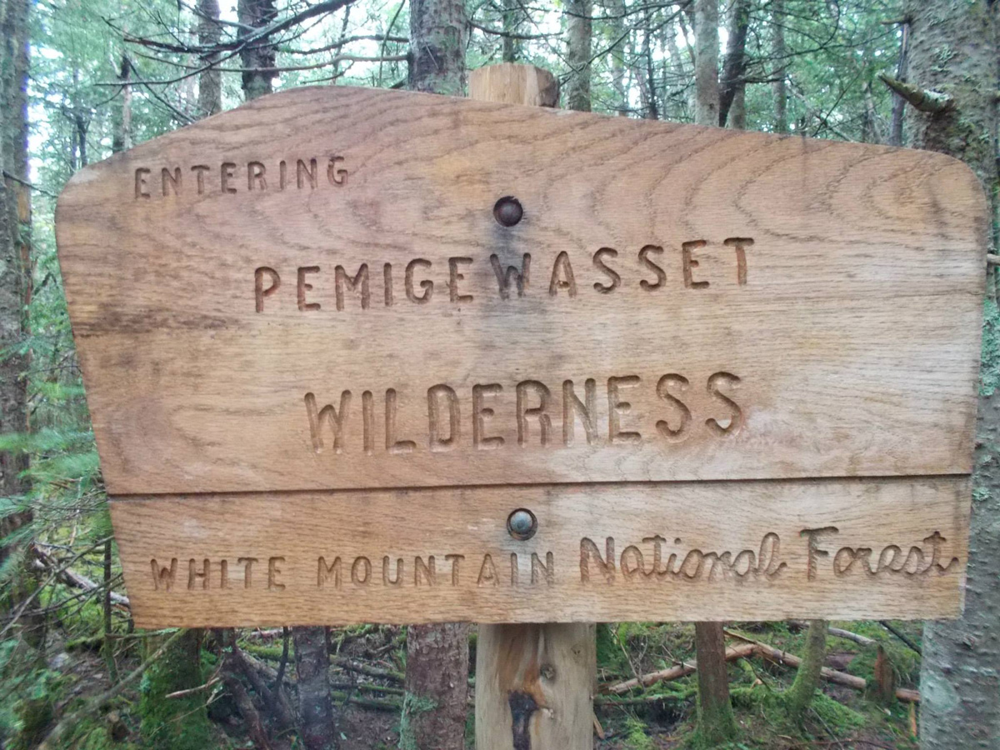
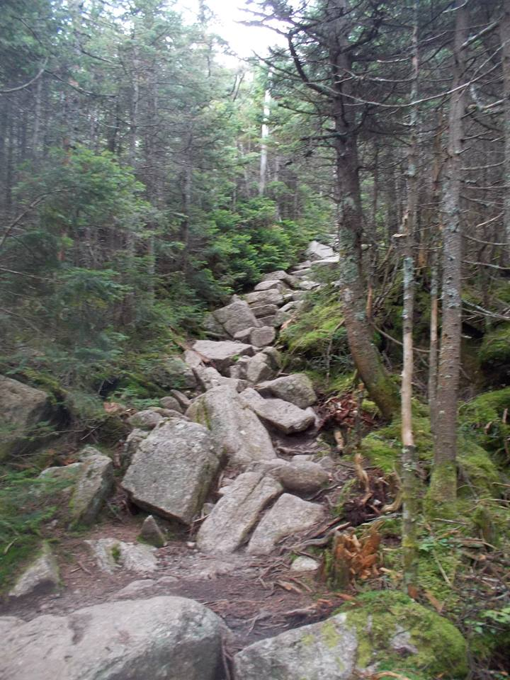

"Mountains are the cathedrals where I practice my religion."
Anatoli Boukreev

"May your trails be crooked, winding, lonesome, dangerous, leading to the most amazing view. May your mountains rise into and above the clouds."
Edward Abbey

"There are two kinds of climbers, those who climb because their heart sings when they’re in the mountains, and all the rest."
Alex Lowe
Pemi Loop Backpacking
White Mountains, New Hampshire
It was the time of the year, when us, long-time buddies, dating back decades ago gather to do one thing we love, backpacking. This time, it’s the White Mountains in New Hampshire, The Pemi Loop trail. It’s about 31.5 rugged miles with 9000 feet elevation gain to tackle in a three- day hiking journey. It all started in The Lincoln Woods Visitor Center, about less than 6 miles east of Route 112 from exit 32 in I-93. There is a very large parking in the area where you need to secure fee, $5 daily you can locate the box with envelope there to pay for it and, or, $20 for the whole week to be paid in the WM shelter.

This is where the journey all began, it is a 1.4miles walk in the park hike before reaching the Osseo Trail junction. Then, the real hike begins here, hiking Mt. Liberty to start with is tiring yet fun and rewarding.
Here is the fun that I am taking about, the 360 degree view on top of Mount Liberty. Which I spent plenty of time resting while waiting for them to regroup.

It is about 4 hours or so to reach the Liberty Spring Campsite to spend the night with. We took our time in the first day since Little Foot (trail name) came straight from Los Angeles to New York. It was a great camp site, with wooden platform, you have to pay $7 a night per tent, which I believe very reasonable, thanks to AMC for creating them.

Day 2 is the fun day, where as we are all rested the whole night in a cozy tent in about winterish summer night. The temperature in White Mountains is very unpredictable, in a summer day you can go as high as 90° to 35° at night. We refill our water here because the next water source is in Garfield camp site; which is about 6 miles from here. We then, started the trek around 8am, we are about to tackle 4 peaks and 10 miles or so of this jagged trail.

Looking at Little Haystack from afar, so near yet so far. After leaving Liberty camp site, and miles Of gruesome hiking we reach the peak of Little Haystack.
This day is nothing but miles of peak bagging and trail pounding hike. This photo is at top of Mount Liberty.


Uh oh, bad weather on the horizon. What is worst than being caught by storm and wind while tackling this peaks? But it’s okay, we are ready for this, so, bring it on.

Did I mention that we are ready for a bad weather? Fortunately, it didn’t rain but the weather is still cold in top of Mount Lincoln so I’d rather hang on to my Marmot Precip rain jacket.
So, what’s next, trails and peaks, miles of it. This trail leads to Mount Lincoln. Nothing but rocks, pebbles, wind and a beautiful scenery of White Mountains.

For the second day we planned on reaching Guyot campsite. A whole day of hiking is the plan, but we cut the 2nd day short since one of us suffered from knee pain. We ended up camping in Garfield campsite. Garfield campsite is about 6 miles from Liberty campsite, with yet, another cozy tent platform and water source. We decided not to finish the hike and took the by-pass trail the next day going back to the parking area.

Some of the scrambling trails in Pemi Loop. Knee pain anyone?
It is fun-filled trip with friends no matter how it ended. But, surely, I’ll be back to do it over and over again. Surely, Pemi Loop is one of the great hikes in northeast.